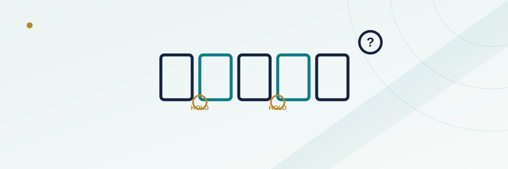

Video Poker Auto-Hold: Why the Suggested Hold Isn't Foolproof

Most online and app-based video poker machines now offer a one-tap "auto-hold" button: deal the hand, and the software instantly highlights which cards it thinks you should keep before you draw. It feels like a shortcut past the whole point of our video poker pay-table guide — memorizing which cards to hold for a given hand — and on a well-built, correctly configured machine, it usually is exactly that: a shortcut to the mathematically correct play. The catch is the word "correctly configured." Auto-hold isn't a neutral, universal truth-teller; it's a strategy engine tuned to one specific pay table, and the moments where that tuning doesn't match what you're actually playing are exactly where the feature quietly costs money instead of saving it.
In this guide
What auto-hold is actually doing behind the scenes
When a machine offers auto-hold, it isn't guessing or applying a general poker instinct the way a person might. It's running your dealt hand through a lookup table (or, on more modern platforms, a computed expected-value comparison) built specifically for that game's exact pay table — the exact payout schedule for a royal flush, four of a kind, a full house, and every other winning hand down to a simple pair. That table was generated in advance by comparing every possible way of holding zero to five cards from a given hand and ranking them by long-run expected value. When it works as intended, it's genuinely doing the same math a strategy chart does, just instantly and without you needing to memorize it.
That's a real, useful feature on a machine where the pay table the engine was built for is the same pay table you're actually playing. The trouble starts the moment those two things diverge.
How the suggestion engine picks a hold
For a single dealt hand, there can be thousands of legal ways to choose which of the five cards to hold before the draw — hold nothing, hold one, hold any combination up to holding all five. A correctly built auto-hold engine evaluates the expected return of every one of those combinations against the specific pay table in play and highlights whichever one returns the highest long-run value, not necessarily the one most likely to win outright. That distinction matters: the "safest," most-likely-to-win hold and the highest-expected-value hold are sometimes different choices, and a well-tuned engine is built to prioritize the latter even when it looks less obviously safe to a player watching the screen.
Where auto-hold quietly gets it wrong
The single biggest risk isn't that the underlying math is bad — it's that the engine's suggestion is only as good as its assumption about which pay table you're actually playing, and that assumption can be wrong in a few specific, common situations. Multi-game cabinets and apps that bundle several video poker variants together are the clearest example: Jacks or Better, Bonus Poker, Double Bonus, and Deuces Wild all use meaningfully different pay tables and, in Deuces Wild's case, an entirely different scoring structure built around wild cards. If a player switches games without the auto-hold engine correctly re-indexing to the new variant's table — a real risk on some older or poorly maintained platforms — the suggested hold can be optimized for the wrong game entirely.
A second, subtler gap shows up on machines or apps that advertise "auto-hold" but actually run a simplified heuristic rather than a full expected-value engine — keep any pair, keep any four cards to a flush, keep high cards, in a fixed priority order rather than a true hand-by-hand calculation. That kind of shortcut logic gets the obvious hands right and can misfire on close, borderline hands where the mathematically correct hold isn't the most visually obvious one, which is precisely where a real strategy chart earns its keep.
A worked example: two pay tables, two different holds
Picture a dealt hand of two pair — say a pair of jacks and a pair of sevens, with an unrelated fifth card. On a standard full-pay Jacks or Better table, holding both pairs and discarding the fifth card is the textbook-correct play, chasing the fairly common full house while banking the guaranteed two-pair payout as a floor. On a Bonus Poker or Double Bonus variant, where four-of-a-kind payouts are inflated well above a standard table specifically to reward hands that chase quads, the correct hold on certain related hands can shift toward keeping a single pair and a kicker instead of both pairs, because the bigger four-of-a-kind payout changes which path has the higher expected value. An auto-hold engine built for the wrong table in that moment doesn't just suggest a slightly worse play — it suggests a hold optimized for a payout structure that isn't the one that will actually pay you.
| Situation | Auto-hold risk level | Why |
|---|---|---|
| Single-game machine, one fixed pay table | Low | Engine and pay table always match; suggestion is reliably optimal for that game |
| Multi-game cabinet or app, several variants | Moderate to high | A hold optimized for the wrong variant can be quietly suggested if indexing lags a game switch |
| Simplified "keep pairs and high cards" heuristic engines | Moderate | Handles obvious hands fine; can misjudge close, non-obvious holds |
| Deuces Wild or other wild-card variants on a non-specialized engine | High | Wild-card hands follow different logic entirely from a standard high-card table |
The hidden cost: how auto-hold changes your pace of play
Even when the engine is correctly matched to the pay table, auto-hold introduces a second, less obvious cost: it makes each hand faster to play. Removing the step of manually selecting cards shrinks the time between hands, which raises how many hands per hour a player runs through at a given bet size. That's not a math error in the strategy itself, but it does mean a small, structural, unfavorable house edge — even a well-played Jacks or Better game typically carries one — gets applied more times per hour than it otherwise would. A feature that speeds up play without changing the size of your bankroll allocation per session can quietly increase your expected loss rate for the session simply by increasing volume, independent of whether any individual hold was correct.
How to use auto-hold without losing your edge
The feature is genuinely useful when two conditions are both true: you've confirmed which specific pay table you're playing (the payout schedule is usually displayed on the game's help or paytable screen), and you trust the platform's auto-hold engine to be a full expected-value calculator rather than a simplified shortcut — something reputable, licensed platforms generally disclose in their game rules or help documentation if asked. Checking the pay table once at the start of a session costs a few seconds and removes the main source of risk described above. It's also worth deliberately slowing your own pace even with auto-hold engaged, both to keep your hands-per-hour in line with your bankroll plan and to actually absorb what the engine is teaching you about correct strategy over time, rather than tapping through hands on autopilot.
Frequently asked questions
Is auto-hold ever intentionally programmed to suggest a worse play?
On a licensed, regulated platform, no — the feature is built to calculate expected value off the displayed pay table, not to nudge players toward worse outcomes. The risk described in this guide comes from mismatched pay tables or simplified logic, not deliberate manipulation.
How can I check whether a game's auto-hold matches the pay table I'm looking at?
Open the game's help or pay-table screen before you start, confirm the payout schedule shown there, and compare a few of the engine's suggested holds on early hands against a printed strategy chart for that specific pay table if you want to verify it directly.
Does auto-hold work the same way for Deuces Wild as it does for Jacks or Better?
Not in the way the underlying strategy is built. Deuces Wild strategy is structured entirely around how wild deuces change hand value, which is a different calculation from a standard high-card game, so a properly built engine needs a dedicated strategy table for that variant specifically.
Should a beginner rely on auto-hold instead of learning basic strategy?
It's a reasonable starting point on a machine with a verified, matching pay table, but learning the underlying logic still pays off — it's the only way to catch a mismatched or simplified engine, and it carries over to any machine you play in the future, even ones without the feature.